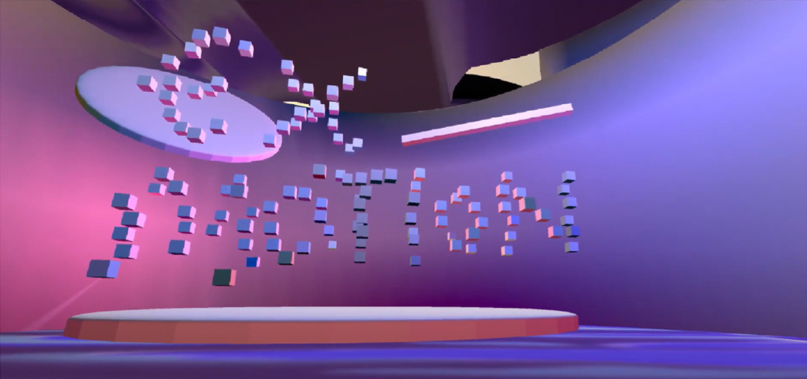
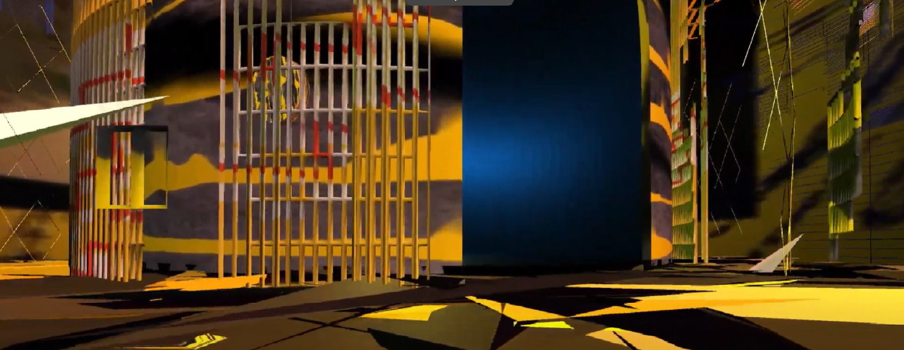
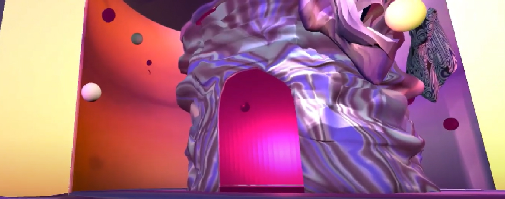
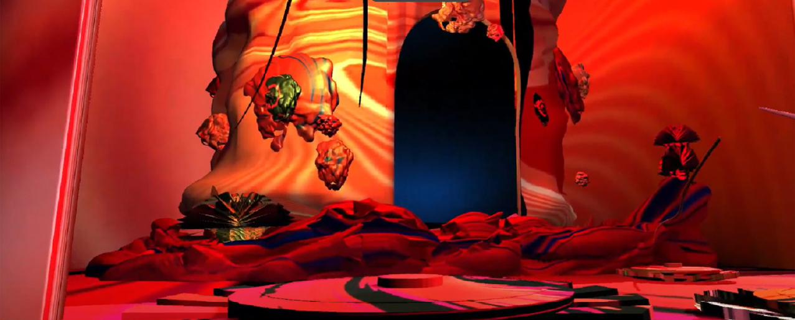

@b.flow8
b.flow888@gmail.com
(+31) 6 4466 5551
(+82) 10 4848 4108
문화교양학과
한국방송통신대학교, 서울, 대한민국
Graphic Design
헤이그 왕립 예술학교
Royal Academy of Art in the Hague
서울대학교 디자인과 학점이수 교환학생
서울대학교, 서울, 대한민국
EuroFabrique Design Camp
Chaumont, France
웹편집 및 디자인보조
Elite forum, 서울, 대한민국
영어 강사
금천구 시은학원, 강서구 프라임 학원, 서울, 대한민국
영업부 외국계 기업 컨설턴트 및 통번역
LG U+ 영업부
Garden of Love
Grey space, The Hague The Netherlands
Karen Brodine
Prinsessegracht 4, The Hague The Netherlands
Women typography
Grey space, The Hague The Netherlands
안녕하세요, 그래픽 디자이너 장예나입니다.
저의 과거와 현재를 이어보면, 과거의 열정이 현재로 이어지는 선이 있습니다.
이 선의 포트폴리오를 미래로 연장해서 기대되는 미래를 함께 그려보고 싶습니다.
21살에, 중고등학교 학생을 가르치는 학원에서 영어 강사가 되었습니다. 저는 영어를 공부함으로써 어린 시절부터 모호했던 유럽의 꿈을 확고히 할 수 있을 것이라 믿었습니다. 그러나 주어진 교과서 이상의 호기심으로 영어 교사의 역할은 저에게 지루하게 느껴졌고, 그림과 디자인을 취미로 배우면서 유럽의 디자인에 관심을 갖게 되어 혼자 떠난 유럽여행에서 많은 귀감을 받았습니다.
유럽에 대해 잘 알지 못했지만, 어린 시절 자주 들었던 '프랑스'에 처음 도착했습니다. 프랑스의 몇몇 디자인 아트 보자르를 방문하여 그곳 사람들과 대화를 나눴습니다. 리옹에서 예술학과 학생 줄리엣의 집에 머무는 동안, 예술과 유럽에 대해 밤새 이야기를 나눈 후 유럽에서 예술을 공부하기로 결심했습니다. 네덜란드를 직접 방문한 적은 없었지만, 줄리엣은 친구들을 통해 네덜란드의 디자인, 예술, 생활에 대해 잘 알고 있었습니다. 네덜란드의 실험적이고 예술적인 디자인과 국제적이며 영어 사용이 편리한 환경에 매료되어, 프랑스 여행 후 KABK 그래픽 디자인 프로그램에 지원했습니다.
매 연말마다 꼭 한 해를 되돌아보는 시간을 갖습니다. 바쁜 일상 속에서 장기적인 목표나 가치에 대해 심도 있게 사색할 시간을 찾는 것은 도전적입니다. 그러나 연말에는 몇 일 동안 내 마음속의 생각을 큰 A0 사이즈 캔버스에 기록하고 정리하는 시간을 갖습니다. 명확한 가치관은 다양한 상황에서 진정한 자신에게 충실한 결정을 내리게 도와줍니다. 그래서 그것들을 새해의 모토로 요약하고 새겨두어 스스로에게 상기시키려고 합니다. 2024년에는 다음과 같은 의미를 더 깊게 새기기로 계획하고 있습니다.
1. 나와 타인들에게 유익을 주는 일을 하자.
2. 혼자는 아무 것도 할 수 없다. 도움을 받은 모든 일에 감사하자.
3. 늘 새로운 도전에 준비하는 용기를 가지자.
4. 타인의 불편과 장애물에 주의를 기울이자.
5. 늘 겸손한 마음을 유지하고, 내가 해선 안되는 하찮은 일은 세상에 없다는 것을 기억하자.
6. 장기적인 목표에 집중하자.
7. 언제나 따뜻한 마음과 차가운 머리를 유지하도록 하자.
저는 "기억"에 대해 깊은 관심을 가지고 있습니다. 호기심이 많아 주말에는 카페나 도서관에서 책을 읽고 관심가는 분야를 리서치하며 새로운 세상의 지평을 조금씩 넓혀 기억하고자 합니다. 그렇지만 세상은 깊고 넓어 알지 못하는 것으로 늘 가득합니다. 그러므로 제 기억은 불완전하지만 흥미로운 파편으로 가득 찬 서사입니다. 저는 이런 이야기 보따리를 꾸려가는 것이 취미인데 이것이 디자이너로써 디자인을 할때 자연스럽게 표현되어 많은 도움을 받습니다. 그런 점에서 저는 운이 좋게도 덕업일치로 살아가며 일에서 자아를 실현하는 사람입니다. 제 디자인은 항상 변화하는 세상에서 과거의 기억과 함께 성숙해져가는 경험들을 전달합니다. 비록 시작은 개인적이고 알려지지 않은 스몰스토리여도 공감을 통해 다른 이들의 기억에도 오래 남는, 성장형 스토리를 만들고 싶습니다.
학교에서 배운 디자인은 난세의 영웅이 될 수도 있을법한 대단한 도구였으나, 개인적으로 디자이너로써 세상을 구하는 거창한 디자인을 모두가 해야한다고 생각하지 않습니다. 저라는 디자이너는 작고 하찮다 여겨지는것들에 대해서 가치를 발견하고 디자인으로 새로운 시선을 부여함으로써 작은 것의 세상을 구하려는 디자이너입니다. 비록 디자인은 상업과 깊이 관련되어 있어 현실과 타협해야 하는 순간도 많이 찾아오지만, 그럼에도 불구하고 타성에 젖어 무감각하게 석화된 디자이너보다는 기회를 공략하는 감각이 살아있는 디자이너가 되려고 합니다. 그렇게 세상의 문제에 작게라도 관여해서 해결하고 도움을 줄 수 있는 여백의 가능성을 생각하고 일하고 싶습니다. 여백에는 디자인을 사용하는 사용자에게 충분히 기능적인 디자인, 정직한 이야기가 전달되어 감성이 불러일으켜지는 가능성의 또다른 표현입니다. 디자이너로서의 욕심일 수도 있겠지만, 아름답고 기능적인 작품을 만드는 것 뿐만 아니라 사람들로 하여금 생각하고 느끼게 하는 디자인을 하고자 합니다. 시각적으로 매력적이면서도 의미 있는 생각으로 유도하는 디자인을 창조하는 것이 목표입니다.
저는 진심으로 좋아하는 일을 하는 사람들과 함께 좋은 작업을 만들어가는 것이 이상적인 일터의 풍경이라고 생각합니다. 그리고 이렇게 즐길 수 있는 작업 환경이 일상이라면 더할 나위없이 좋겠습니다. 목수는 집을 짓고 의사는 사람을 살리고 디자이너는 디자인을 해야합니다. 저는 디자이너로써 시각적으로 매력적인 디자인에서 더 나아가 각 프로젝트가 맡은 세상의 한 부분을 이해하고, 그 안에서 사람들에게 의미있는 것을 발견하여 전달하는 일에 전념하고 싶습니다. 디자이너로서 지식과 기술적 역량을 개발하는데 지원받는 만큼 더 성장해서 좋은 결과물을 보여드릴 것이라고 약속합니다.
코로나 기간 동안, 팬데믹은 우리의 신체 건강뿐만 아니라 정신 건강에도 영향을 미쳤습니다.
"Ex-motion"은 사람들이 화, 우울, 불안의 세 가지 감정 언어로 코로나 시기의 감정을 표현할 수 있는 가상 공간입니다.
*클릭시 WebGL의 가상 공간을 플레이한 영상 녹화본을 보실 수 있습니다.
   
Sheer는 네덜란드의 대표적인 국제 도시 헤이그에 있는 국제적인 사람들의 연결을 촉진하기 위한
가상 커뮤니티 브랜드 디자인입니다. 공예의 부드러운 가치를 통해 연결을 실현합니다.
She
스스로를 여성으로 규정하는 여성
Sheer
아주 얇고 비치는 직물 또는 물건
She-er
여성이라는 직업
Share
(무언가를) 다른 사람과 나누다.
Cheer
1. 기쁨이나 칭찬 또는 격려의 함성.
2. 위로하거나 지원하다.
직조로 유연하게 구획되고 구상되어 Sheer의 모든 구성원이 참여함에 따라 끊임없이 변화하는 공간입니다.
사용자들은 자신의 알파벳 글자를 펀칭하여 이름표를 맞춤 제작하여 자신만의 디자인을 만들 수 있습니다. 브랜드 태그가 달린 포스터는 거리에서 예술 작품처럼 전시됨과 동시에 미적 커뮤니티로서의 Sheer를 홍보합니다.
Sheer 회원들이 직조한 매트는 일상생활에서 사용되며 자연스럽게 외부인에게 노출되어 포스터와 같은 효과로도 활용됩니다.
영화 Nomadland의 줄거리, 명언, 풍경등이 하늘의 시간 변화를 닮은 네개의 포스터책 버전으로 해석되었습니다.
독자는 다양한 방식으로 포스터를 접어 비선형적으로 이야기를 읽으면서 유목 생활 여정을 간접적으로 경험할 수 있습니다.
아나그린(Anagreen)은 John burger의 "Way of Seeing"에서 영향을 받아 의도, 감정, 생각 및 관습에 영향을 받은 인간 인식의 다양성을
탐구한 프로젝트입니다. 아나그린(Anagreen)은 'Anagram'(글자를 재배열하여 새로운 단어를 형성하는 것)과 색상 자연을 상징하는
'Green'의 합성어입니다. 퍼포먼스 영상과 콜라주 출판물을 통하여, 세계를 해석하는 다양한 시각을 강조하고자 합니다.
OVERVIEW
자연의 구성요소인 하늘, 흙, 식물 등을 시각적으로 해체하는 세 가지 방법:
힐끗(Glimpse): 일종의 힌트나 투사성을 가지고 짧은 시간 동안 살짝 봄
관찰(Observation): 대상을 주목하여 깊고 다양한 방면으로 이해하려 함
상상(Imagination): 현실의 경계를 초과하며, 심상을 만들어내는 행동
이 책은 Audre Lorde의 에세이 "Uses of the Erotic: The Erotic as Power"를 바탕으로 여성성의 정신적인 힘인
에로틱의 잠재력을 강조합니다. 감정을 인식하고 자기와 연결되는 낙서를 통한 능동적인 독서 행위를 통해 에로틱의
정신적 힘과 가까워지도록 유도했습니다. 익명의 기여자들의 개인적인 노트와 일기를 통합함으로써, 독자들은 그들의
감정을 되새기고 자신 안에 있는 에로틱의 힘을 되찾는 경험을 할 수 있습니다.

Urbanism은 Dutch Best Book Design상을 받은 네 권의 네덜란드 책을 쇼케이스하는 카탈로그입니다.
각각의 책은 도시를 다양한 측면으로 조명하는 동시에 사방위로 얽혀지고 펼쳐지며 도시의 역동적인 복합성을 드러냅니다.
City in Transition은 세계 도시의 일반적인 성장과 변화을 설명하는 텍스트를 하이퍼링크 형식으로 아카이빙한 웹입니다.
얽히고설킨 하이퍼링크 거미줄 구조는 도시의 역동적인 상호연결성의 본질을 포착하며,
이것이 인간과 자연을 둘러싼 생태계 구조와 환경 형성에 연쇄작용으로 미치는 역할을 강조합니다.
카렌 브로딘(1947-1987)은 미국 시인이자 여성주의자, 정치 활동가였습니다. 식자공으로써 사회활동했던 그녀의 삶과 작품에서 영감을 받아
그녀의 여성 인권과 직장 내 계급 투쟁에 헌정하는 책 공연 포스터 시리즈를 기획했습니다. 본 프로젝트는 그녀의 시에서
"Woman Sitting at the Machine, Thinking"를 비롯하여 발췌한 그녀의 시의 구절들과 함께 사무엘 솔로몬의 에세이 "Offsetting Queer Literary Labor"을
통합한 책과 그녀의 강인한 투쟁 정신을 시청각적으로 묘사한 공연 포스터로 이루어져 있습니다.
넷플릭스 시리즈 '헬바운드(Hellbound)'를 기반으로 내러티브를 재해석한 21분의 인터랙티브 공연입니다.
극의 시작부터 끝까지 관객의 전체 동선을 고려하여 관객이 지옥으로 가는 이계를 몰입적으로 경험할 수 있도록 설계하였습니다.
서사의 섬뜩하고 긴장감 넘치는 분위기를 생생하게 전달하기 위하여 음악, 오디오, 무대 디자인, 조명 및 내레이션, 티켓과 포스터를
전체적으로 디자인하였습니다.
Information Society는 그림 책으로, 주인공이 정보 과다 사회에서의 문제를 겪으며 살펴보는 이야기를 담고 있습니다.
왜곡된 텍스트와 해체된 이미지로 가짜 뉴스와 온라인 괴롭힘의 문제를 풍자적인 일러스트로 보여줍니다.
주인공은 오늘날 디지털 시대의 정보의 홍수에 직면한 현대인의 고뇌를 대표하여 보여주는 인물입니다.
Shadow CV은 과거 다양한 아르바이트와 직장생활을 경험하며 공식적인 이력서에는 소개하지 못하는 이중 생활에 대한 개인적인 이야기를 쓴 자전적 에세이입니다.
17개의 일러스트와 에세이로 구성된 본 책은 선악과를 상징하는 사과를 둘러싼 사회적 편견과 낙인에 대한 이야기를 전합니다.
이 선과 악의 테마는 빛과 어둠이라는 흑백의 톤으로 대치되어 표현되었습니다.
한국의 글꼴 디자이너 안상수의 한글 서예 디자인에서 영감을 받아, 한글 문자의 구성과 형태를 실험적이고 유희적으로 표현하였습니다.
Variable 폰트를 만드는 새로운 방법을 플로터 기계로 실험했습니다. 다양한 펜, 연필, 붓등의 드로잉 도구를 플로터 기계에 연결하여 하나의 벡터 선을 다양한 글꼴 무게, 펜의 질감으로 구현했습니다.